Chapter 10 Vegetation Plant Profile Diagrams
The reason vegnasis package was created in the first place is to generate pictorial diagrams of vegetation structure using plant shapes. Currently, only the most basic shapes have been developed as a proof of concept: generic broadleaf, conifer, shrub, forb, graminoid, palm, and fern. Over time, it is expected that more templates would be drawn in Inkscape or similar vector drawing software, and converted to xy coordinates that can be plotted with the ggplot2 package. The graphical function simply uses the geom_polygon() element within ggplot to draw individual plants, with colors fading with distance to simulate depth.
Before plotting any veg plot data, it first needs to be standardized with vegnasis::clean.veg() or vegnasis::pre.fill.veg(). It is highly recommended to limit data to a single plot before processing with vegnasis::grow_plants(), which will create the elements needed to draw the plants with the vegnasis::veg_profile_plot() function.
10.2 Plot Plant Profile Diagrams
10.2.1 Northern Michigan hardwood forest
veg.select <- subset(veg, grepl('2022MI165002.P',plot))
plants <- grow_plants(veg.select)
veg_profile_plot(plants)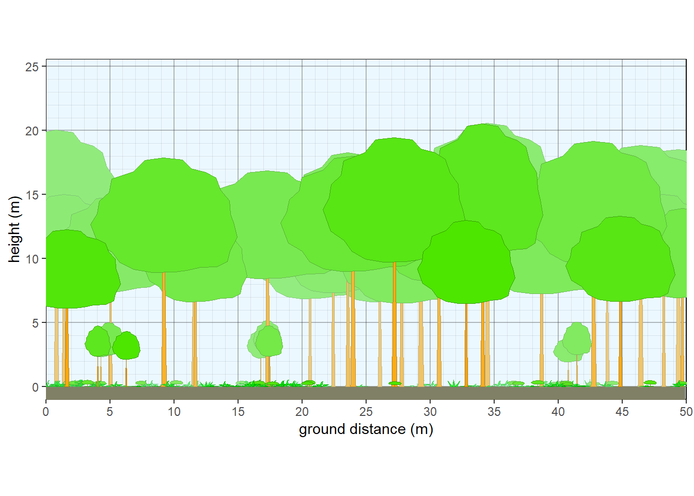
Figure 10.1: Structure of northern Michigan hardwood forest.
10.2.2 Transformed Y axis
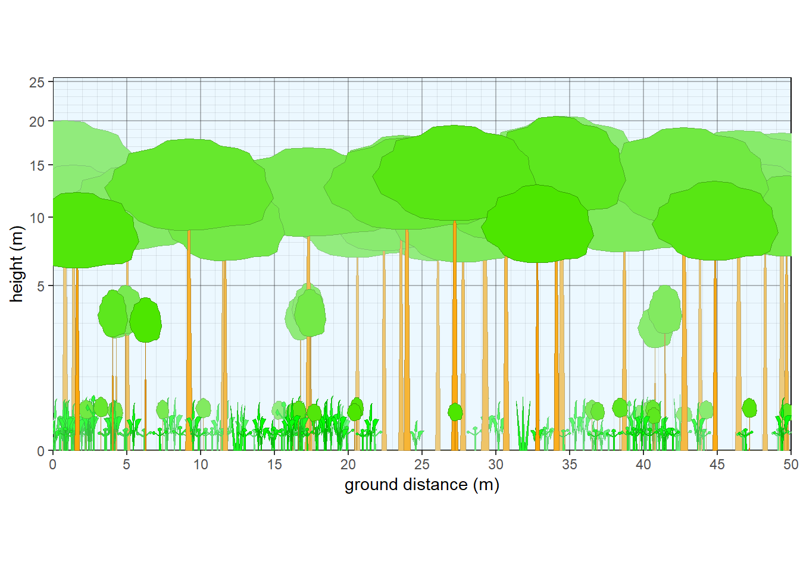
Figure 10.2: Structure of a northern Michigan forest (transformed).
10.2.3 Northern Michigan mixed forest
veg.select <- subset(veg, grepl('2022MI165023.P',plot))
plants <- grow_plants(veg.select)
veg_profile_plot(plants, unit='m', skycolor = 'white', fadecolor = 'lightgray', gridalpha = 0.1, groundcolor = 'darkgray')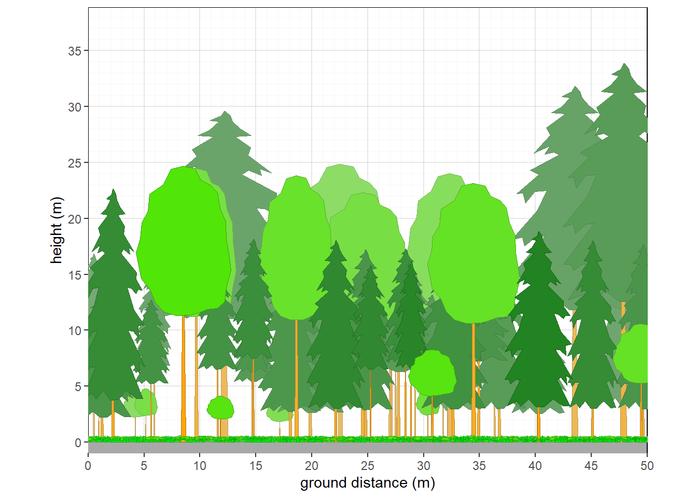
Figure 10.3: Structure of northern Michigan mixed forest.
10.2.4 Northern Michigan pine forest
Override default tree colors and shapes.
veg.select <- subset(veg, grepl('2022MI165021.P',plot))
taxon <- c('Acer rubrum', 'Pinus resinosa')
crfill <- c(NA,"#80991A")
stfill <- c('gray',"#B36666")
crshape <- c(NA,'conifer2')
override <- data.frame(taxon=taxon,stfill=stfill,crfill=crfill,crshape=crshape)
veg.select <- veg.select |> left_join(override)
plants <- grow_plants(veg.select)
veg_profile_plot(plants)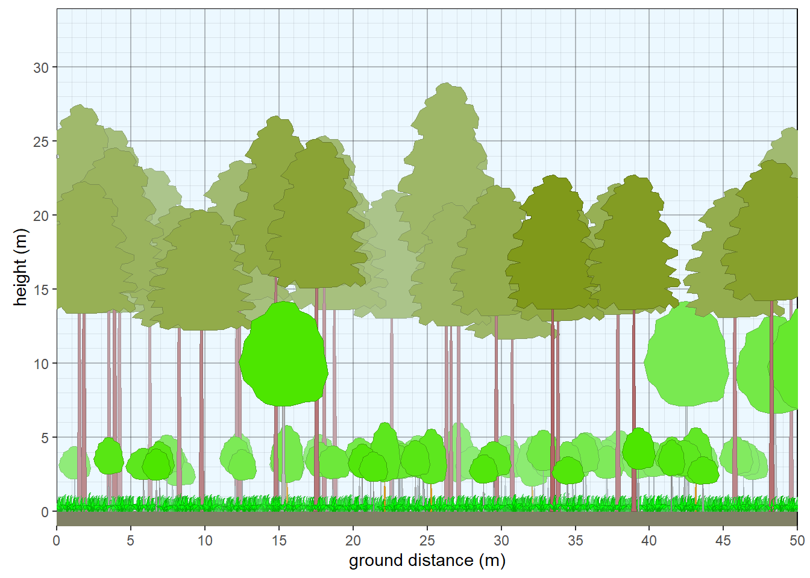
Figure 10.4: Structure of northern Michigan pine forest.
10.2.5 Washington conifer forest
veg.select <- subset(veg, grepl('2021WA031024',plot))
plants <- grow_plants(veg.select)
veg_profile_plot(plants, unit='m', skycolor = 'white', fadecolor = 'lightgray', gridalpha = 0.1, groundcolor = 'darkgray')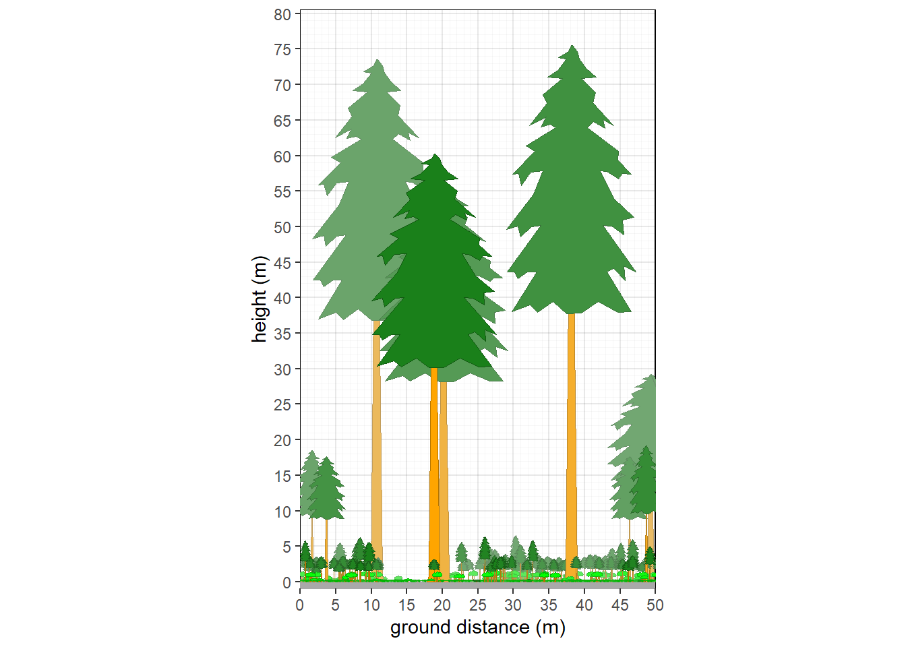
Figure 10.5: Structure of a Washington conifer forest.
10.3 Custom parameters
There is no need to have existing plot data if the goal is to experiment with generic concepts to illustrate. Species can be made up, and left for default crown shapes, or custom crown shapes or colors can be specified. More advanced (experimental) methods have dynamically arranged branches that scale more appropriately for different aspect ratios than simple stretching along x or y axes. Many parameters can be adjusted such as making the plot wider, changing sky and ground colors, and adjusting slope and curvature.
10.3.1 Oak Savanna
#Make up savanna data
thiscolor = rgb(0.6,0.9,0.7)
plot <- c('plot1')
taxon <- c('Quercus macrocarpa','UNK','Pteridium', 'Festuca', 'Andropogon', 'Liatris')
cover <- c(20,5,10,60,10,5)
crown.max <- c(15,4,1,0.6,2,0.4)
crfill <- c(NA,thiscolor,NA,NA,NA,NA)
dbh <- c(60,NA,NA,NA,NA,NA)
habit <- c(NA,'S.BD',NA,NA,NA,NA)
mydata <- data.frame(plot=plot,taxon=taxon, cover=cover, habit=habit, crown.max = crown.max, dbh.max = dbh, crfill=crfill)
veg <- mydata |> pre.fill.veg()
plants <- grow_plants(veg, plength=100) #Grow more plants on a longer 100 m plot (default was 50 m).
veg_profile_plot(plants, unit='m', skycolor = rgb(0.8,0.98,1), fadecolor = 'lightgray', gridalpha = 0.1, groundcolor = rgb(0.55,0.45,0.2), xlim=c(0,100))Figure 10.6: Structure of a generic oak savanna
10.3.2 Aspen with fir subcanopy
#Aspen with fir subcanopy
plot <- c('plot1')
taxon <- c('Abies','Populus','Pteridium', 'Festuca', 'Andropogon', 'Liatris')
cover <- c(15,30,10,60,10,5)
crown.max <- c(15,25,1,0.6,2,0.4)
crown.min <- c(2,15,NA,NA,NA,NA)
cw <- c(4,7,NA,NA,NA,NA)
crfill <- c(NA,NA,NA,NA,NA,NA)
stfill <- c(NA,'white',NA,NA,NA,NA)
crshape <- c('branch.conifer',NA,NA,NA,NA,NA)
dbh <- c(NA,NA,NA,NA,NA,NA)
habit <- c('T.NE','T.BD',NA,NA,NA,NA)
mydata <- data.frame(plot=plot,taxon=taxon,cw=cw, crshape=crshape,cover=cover, habit=habit, crown.max = crown.max, crown.min=crown.min,dbh.max = dbh, crfill=crfill,stfill=stfill)
veg <- mydata |> pre.fill.veg()
plants <- grow_plants(veg)
#standard aspect ratio
#Set many custom parameters.
veg_profile_plot(plants, unit='m', skycolor = rgb(0.8,0.98,1),
fadecolor = 'lightgray', gridalpha = 0.1,
groundcolor = rgb(0.55,0.45,0.2),
xslope=-5, xamplitude = 4, xperiod = 100)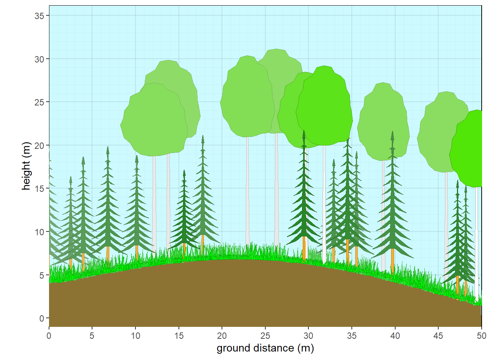
Figure 10.7: Aspen with fir subcanopy - summer
#fall
crfill <- c(NA,'yellow',NA,NA,NA,NA)
stfill <- c(NA,'white',NA,NA,NA,NA)
crshape <- c('branch.conifer',NA,NA,NA,NA,NA)
mydata <- data.frame(plot=plot,taxon=taxon,cw=cw, crshape=crshape,cover=cover, habit=habit, crown.max = crown.max, crown.min=crown.min,dbh.max = dbh, crfill=crfill,stfill=stfill)
veg <- mydata |> pre.fill.veg()
plants <- grow_plants(veg)
#standard aspect ratio
#Set many custom parameters.
veg_profile_plot(plants, unit='m', skycolor = rgb(0.8,0.98,1),
fadecolor = 'lightgray', gridalpha = 0.1,
groundcolor = rgb(0.55,0.45,0.2),
xslope=-5, xamplitude = 4, xperiod = 100)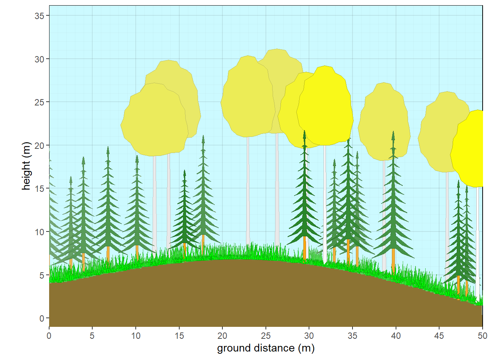
Figure 10.8: Aspen with fir subcanopy - fall
#winter
crown.max <- c(15,25,1,0.1,0.1,0.1)
crfill <- c(NA,'NULL','orange','yellow','yellow','yellow')
stfill <- c(NA,'white',NA,NA,NA,NA)
crshape <- c('branch.conifer','branch.hardwood',NA,NA,NA,NA)
mydata <- data.frame(plot=plot,taxon=taxon,cw=cw, crshape=crshape,cover=cover, habit=habit, crown.max = crown.max, crown.min=crown.min,dbh.max = dbh, crfill=crfill,stfill=stfill)
veg <- mydata |> pre.fill.veg()
plants <- grow_plants(veg)
#standard aspect ratio
#Set many custom parameters.
veg_profile_plot(plants, unit='m', skycolor = rgb(0.8,0.98,1),
fadecolor = 'lightgray', gridalpha = 0.1,
groundcolor = rgb(0.55,0.45,0.2),
xslope=-5, xamplitude = 4, xperiod = 100)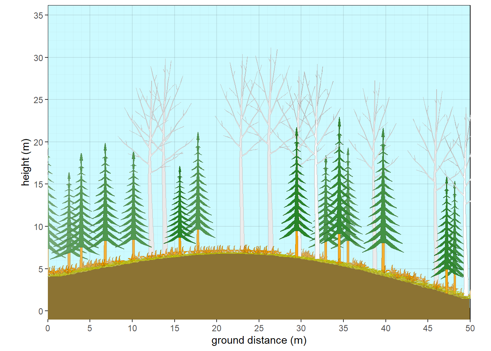
Figure 10.9: Aspen with fir subcanopy - winter
#fire
crfill <- c('NULL','NULL',NA,NA,NA,NA)
stfill <- c('black','black',NA,NA,NA,NA)
crshape <- c('branch.conifer',NA,NA,NA,NA,NA)
mydata <- data.frame(plot=plot,taxon=taxon,cw=cw, crshape=crshape,cover=cover, habit=habit, crown.max = crown.max, crown.min=crown.min,dbh.max = dbh, crfill=crfill,stfill=stfill)
veg <- mydata |> pre.fill.veg()
plants <- grow_plants(veg)
#standard aspect ratio
#Set many custom parameters.
veg_profile_plot(plants, unit='m', skycolor = rgb(0.8,0.98,1),
fadecolor = 'lightgray', gridalpha = 0.1,
groundcolor = rgb(0.55,0.45,0.2),
xslope=-5, xamplitude = 4, xperiod = 100)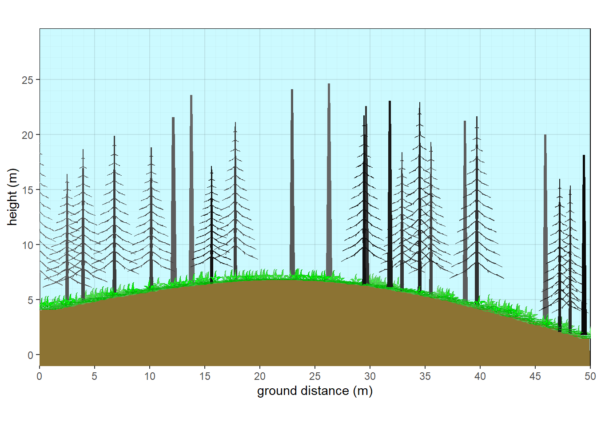
Figure 10.10: Aspen with fir subcanopy - fire
10.4 Segmenting Vegetation, Slopes, and Water Table
As of October 2025, a new feature allows for the creation of slope breaks, segmentation of vegetation, and water table. Rather than showing a simple curve or constant slope, various slope breaks can be introduced to shape the landscape. A water table can then be represented to intercept the slope at a specified height. Cooresponding to where the slope and water tables interact, a vegetation break can be created. Multiple vegetation structures and compositions can be generated and plotted at specified positions along the x axis.
#Introducing Slope breaks and vegetation segmentation
hardwood<-data.frame(
habit =c('T.BD','T.BD','H.F','T.EN','T.EN'),
cover = c(60,10,5,15,15),
crown.max = c(22,25,0.5,15,32),
crown.min = c(9,12,NA,3,12),
cw = c(7,12,NA,NA,15),
crshape=c('hardwood','hardwood',NA,'hemlock','wpine'),
crfill = c('green','green3',NA,'darkgreen','darkcyan')
) |> pre.fill.veg()
boreal<-data.frame(
habit =c ('T.NE','T.NE','H.F'),
crown.max = c(15,12,0.5),
crown.min = c(1.5,2,NA),
cw = c(4,4,NA),
crshape=c('subalpine','wcedar',NA),
crfill = c(NA,'olivedrab',NA),
cover = c(65,25,1)
) |> pre.fill.veg()
tiaga<-data.frame(
habit =c ('T.NE','H.F'),
crown.max = c(9,0.2),
crown.min = c(1,NA),
cw = c(2.5,NA),
crshape=c('subalpine',NA),
cover = c(20,15)
) |> pre.fill.veg()
meadow<-data.frame(
habit =c ('H.G','S.BD'),
crown.max = c(0.5,2),
cover = c(95,3)
) |> pre.fill.veg()
marsh<-data.frame(
habit =c ('H.G'),
crown.max = c(1.5),
cover = c(90)
) |> pre.fill.veg()
bare<-data.frame(
habit =c ('H.G'),
crown.max = c(0.1),
cover = c(0.2)
) |> pre.fill.veg()
plants<-splitveg(bare,marsh,meadow,tiaga,boreal,hardwood,plength = 100, pwidth=20,px=c(12,18,33,45,60))
veg_profile_plot(plants, unit='m', skycolor = 'white',
xlim =c(0,100),
fadecolor = 'gray', gridalpha = 0.1,
groundcolor = rgb(0.55,0.45,0.2),
xslope=0, xamplitude = 0, xperiod = 120, xphase = 0.5,wt=1,
px=c(10,20,30,40,60,75,80,85,100),py=c(0,1,1,2,3,18,20,19,12))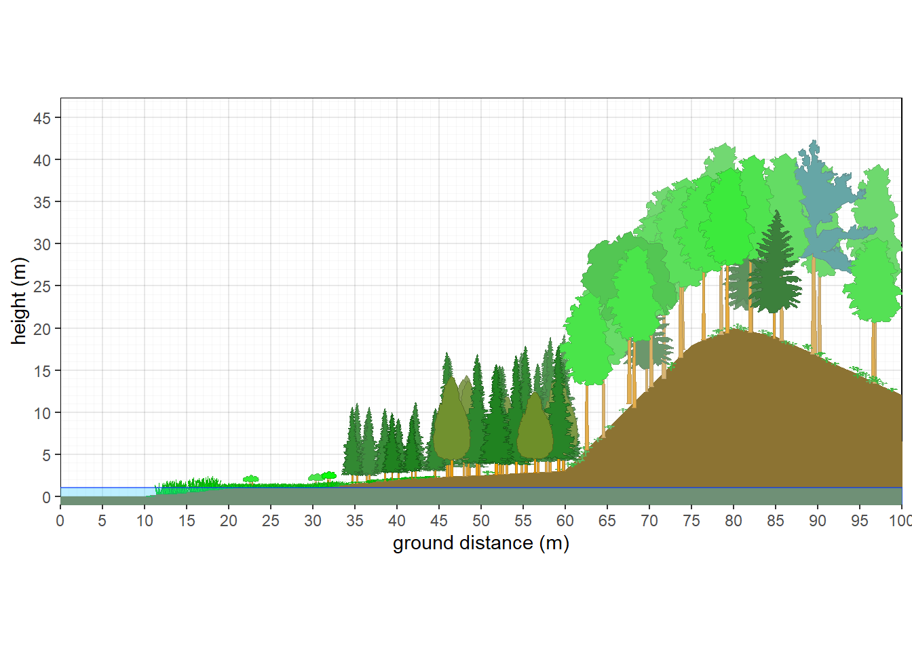
Figure 10.11: Vegetation Gradient
10.5 Overhead View
As of October 2025, a new overhead view plot was created. Currently, only a couple of different shapes are featured, and herbaceous cover is not represented well. Outlines are suppressed due to the unrealistic shape where crowns interact. Future goals would be to allow adjacent crowns at the same stratum to intermingle more subtly.
#overhead view
taxon <- c('Abies','Populus')
cover <- c(15,30)
crown.max <- c(15,25)
crown.min <- c(2,15)
cw <- c(4,7)
crfill <- c(NA,'green')
stfill <- c(NA,NA)
crshape <- c(NA,NA)
dbh <- c(NA,NA)
habit <- c('T.NE','T.BD')
mydata <- data.frame(plot=plot,taxon=taxon,cw=cw, crshape=crshape,cover=cover, habit=habit, crown.max = crown.max, crown.min=crown.min,dbh.max = dbh, crfill=crfill,stfill=stfill)
veg <- mydata |> pre.fill.veg()
strats <- setstrats(veg)
stand <- setstand(strats)
plants.overhead<- setplants.overhead(strats, stand)
veg_overhead_plot(plants.overhead, groundcolor = 'tan')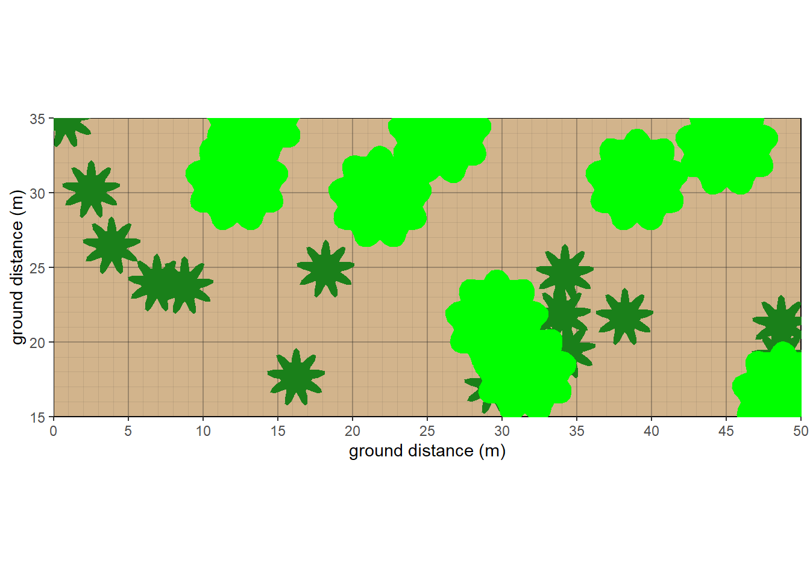
Figure 10.12: Overhead view